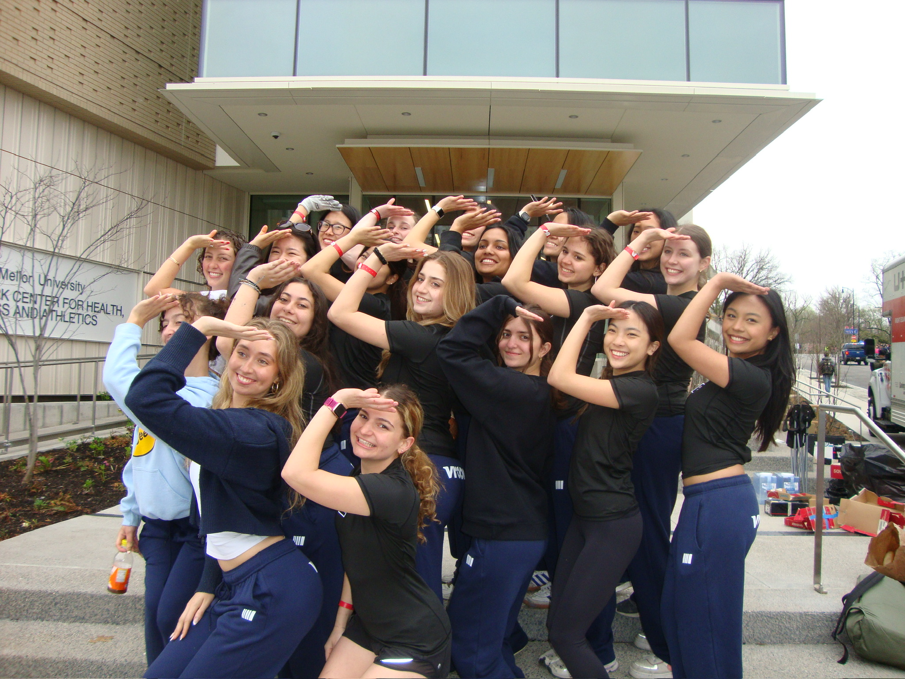

From design, mechanics, to sprinting down Schenley, our team is about pushing limits.. and buggies. The Delta Gamma Buggy Team is proud to be Carnegie Mellon University’s only all-women’s buggy organization. What began as a way to join one of CMUss most beloved traditions has grown into a team defined by innovation, athleticism, and camaraderie.
Buggy is a one-of-a-kind event that combines engineering and athletics. Each spring during Carnegie Mellons Spring Carnival, student organizations compete in time-trial races on a 4,400-foot course. The engineers get to design buggies using carbon fiber and custom braking systems. For the athletes, pushers run in relays, sprinting on flat sections and hills, then handing the buggy off at different points of the hill.
Delta Gamma Buggy Team at the 2025 Buggy Competition
Each spring, student teams build and race "buggies" around a challenging course through Schenley Park as part of CMU's annual Spring Carnival. For Delta Gamma, its an opportunity to break barriers, push limits, and represent women in a tradition that has spanned generations.
Whether you are cheering from the sidelines or being the buggy in itself, being part of DG Buggy means carrying a sense of pride and empowerment. We aim to inspire the next generation of women at Carnegie Mellon to dream big and push further.

Executives of Buggy huddle up next to their award